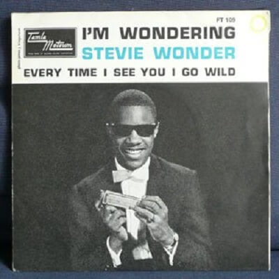

Compositores * Stevie Wonder, H.Cosby, S.Moy
Producción y arreglos * Henry Cosby, Clarence Paul
Músicos * Funk Brothers y Stevie Wonder
Video

Letra
Ooooooooooh, wild! Everytime (See you I go wild)
Oh yeah (Go wild, see you I go wild)
I said, everytime I (See you I go wild)
See you I go wild (Go wild, see you I go wild), oooh
Everytime I see your face, I feel an earthquake coming on
Ooh, you shake me up and you'll break me down
Until all my self-control is gone
You're all the things I've ever wanted, babe,
Underneath the rising sun
Oh, but the hands of fate says no
That someone else say you love her so
Oh baby, but just one look at you (Just one look at you)
My heart cries out for you (heart cries out for you)
'Cuz I love you, love you, love you, love you
Everyime I see you, I go wild
See you I go, ohhh
Everytime I see you, I go wild
You've got sweet magic in your eyes
And it makes you the master of my soul, ohh
Just one look and all my strength takes away under your control
You and your love I see each day (Each day)
Wait 'til the love to look my way (My way)
Oh baby, but when you passed me by (When you passed me by)
Well, I'll break down and cry (I'll break down and cry)
'Cuz I love you, love you, love you, love you
Everytime I see you, I go wild, yeah (See you I go)
Oooh, oooooh
Everytime I see you, I go wild
(I, I go wild, see you I go ooooooooh.. wild!)
I'll go crazy baby, I'll go crazy baby
I'll go crazy baby, I'll go crazy, crazy baby baby (I'll go crazy)
I'll go crazy baby, I'll go crazy baby (I'll go crazy)
I'll go crazy (oh) baby, I'll go (oh) crazy, crazy baby baby (I'll go crazy)
I'll go crazy baby (I'll go crazy), I'll go crazy baby (I'll go crazy baby)
I'll go crazy baby, I'll go crazy, I go wild
Everytime I see you, I go wild, wild, wild, hey baby
Everytime I see you, I go wi-i-ii-ild, wi-i-ild, wi-i-ild, baby baby
Melted all of my resistance (See you I go wild)
Slowly I go very distant (See you I go wild)
Can't do nothin' about your lovin' (See you I go wild)
Hey, I want you, baby, now or never (See you I go ooooh.. wild!).